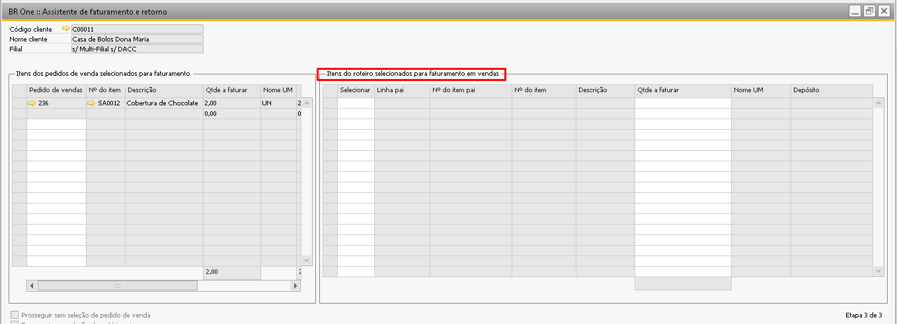

Cadastro de Roteiro
Para o Beneficiamento de Vendas, foi criado um campo adicional chamado Faturado que poderá ser utilizado para indicar os itens próprios que poderão ser faturados no processo. O depósito para este item próprio precisa ser também um depósito próprio (onde o campo Código do proprietário esteja configurado como Propriedades do item de sociedade).
Atenção: O parâmetro faturado da tela de roteiro será utilizado quando o parâmetro Realizar cálculo dos insumos por da tela de configurações do beneficiamento está como Previsto conforme a imagem abaixo. Quando a configuração estiver como Realizado esta definição de faturamento se dará por meio do campo Faturado dentro da Ordem de produção.
Produção -> Roteiro

Flag ativa: O material próprio utilizado no processo de industrialização em beneficiamento de vendas será levado para a etapa 3 do assistente de faturamento e retorno e poderá ser selecionado para faturamento.
Flag inativa: O material próprio utilizado no processo de industrialização em beneficiamento de vendas não será apresentado na etapa 3 do assistente de faturamento e retorno para que possa ser faturado.
Somente será permitido a marcação do campo faturado caso o depósito configurado na linha para o componente seja do tipo próprio Propriedades do item de sociedade.
No cadastro do roteiro, o ideal é que o depósito do cabeçalho seja o depósito definido em Benef. Vendas, isso é, o mesmo depósito utilizado no pedido de vendas, isso porque ao dar entrada no PA o item ficará disponível no depósito do cabeçalho da OP, e ao executar o assistente de faturamento e retorno o campo Qtde no depósito olhará o saldo neste estoque para permitir faturar o pedido.
Já o depósito das linhas de componentes de terceiros o ideal é que seja utilizado o depósito parametrizado em Benef. Vendas. Ao realizar a saída de insumos os componentes de terceiros na estrutura da OP serão transferidos deste estoque para o estoque definido em Expedição benef. Vendas.
Mesmo que o roteiro seja definido com depósitos diferentes dos depósitos orientados, eles ainda podem ser ajustados na tela de ordem de produção com a OP planejada.
O depósito das linhas dos componentes próprios, isso é, um componente que não foi enviado por um terceiro, precisa ter como depósito da linha um depósito próprio, onde o campo Código do proprietário do depósito esteja configurado como Propriedades do item de sociedade conforme a imagem abaixo:
Somente o componente com o depósito próprio poderá ter o campo Faturado selecionado.